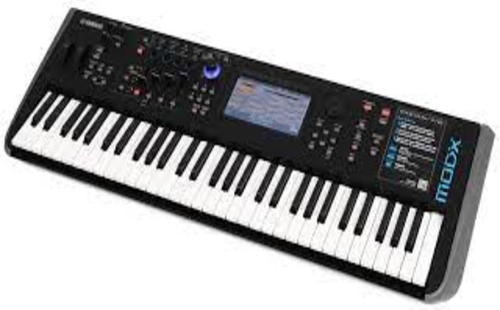

Le MODX6 de YAMAHA
1 199 €
Pour les musiciens débutants et expérimentés
2000 Performances Presets, 640 Performances User, 8 Library
13 blocs d’effets Dual simultanés (12+ AD In)
8 arpégiateurs simultanés, plus de 10000 types
Envelope Follower & Audio Beat Sync pour asservir MODX à un signal audio
Entrée analogique stéréo avec gain d’entrée réglable
Interface audio USB 4 entrées / 10 sorties
Clavier-maître 16 zones
Import des sons de DX7, DX7II, TX802 et TX216/816 via FM Converter
Banques offertes : Piano Bösendorfer Imperial 290, Rhodes mkV de Chick Corea
Dimensions et poids : 937 x 331 x 134 mm
Poids : 6,6 kg
Pour les producteurs qui cherchent des textures hors du commun et une grande liberté de création, le MODX6 est un synthétiseur doté d'un puissant moteur FM-X à 8 opérateurs entièrement contrôlable. Il offre une capacité de programmation très avancée, un contrôle des paramètres permettant une grande jouabilité et une polyphonie massive.